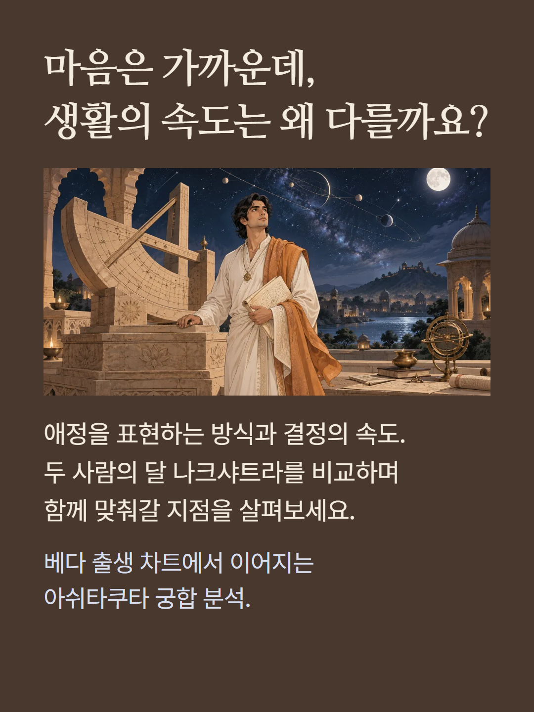
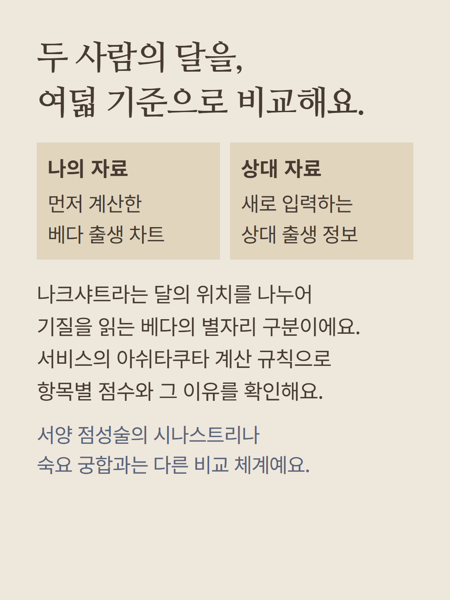
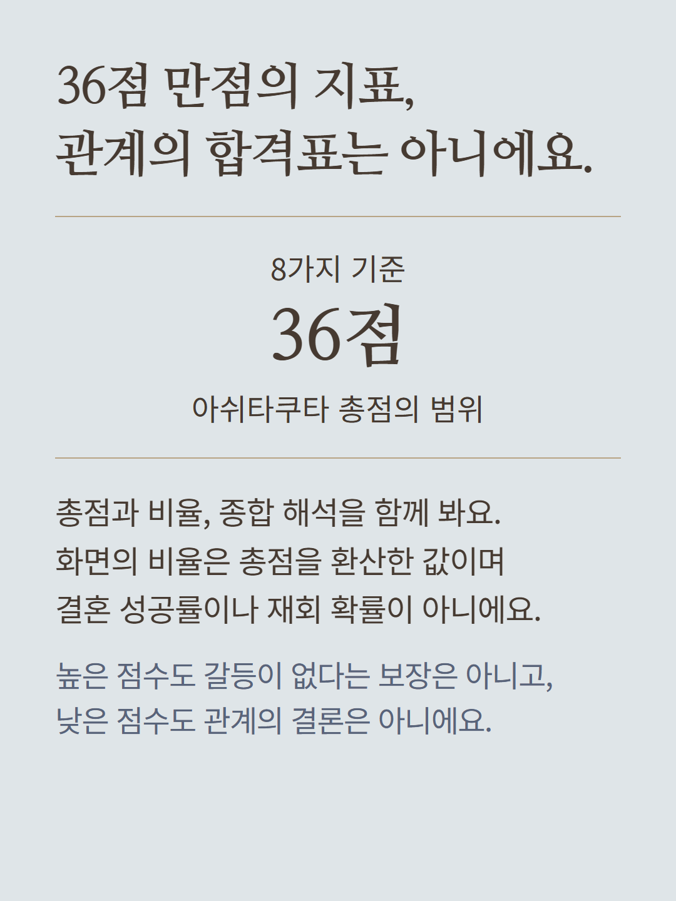
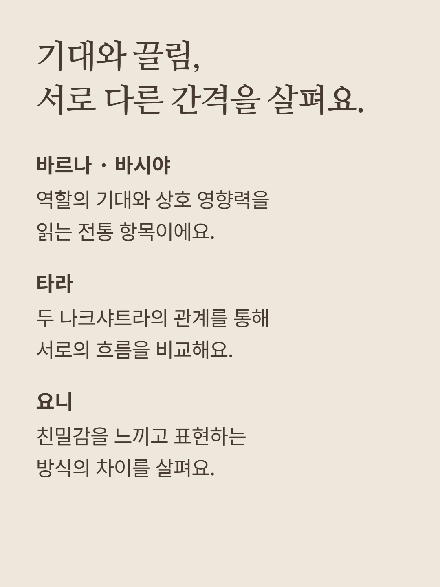
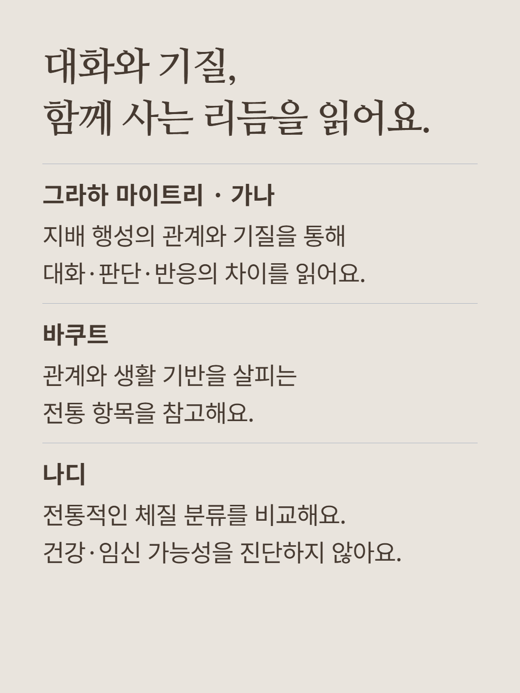
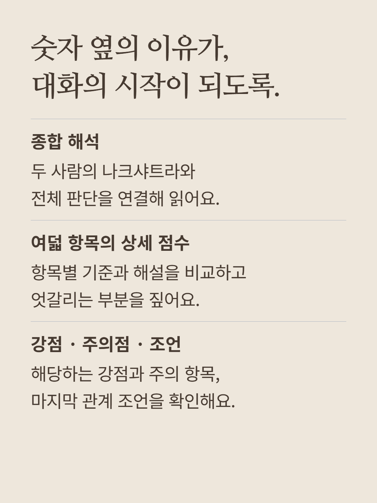
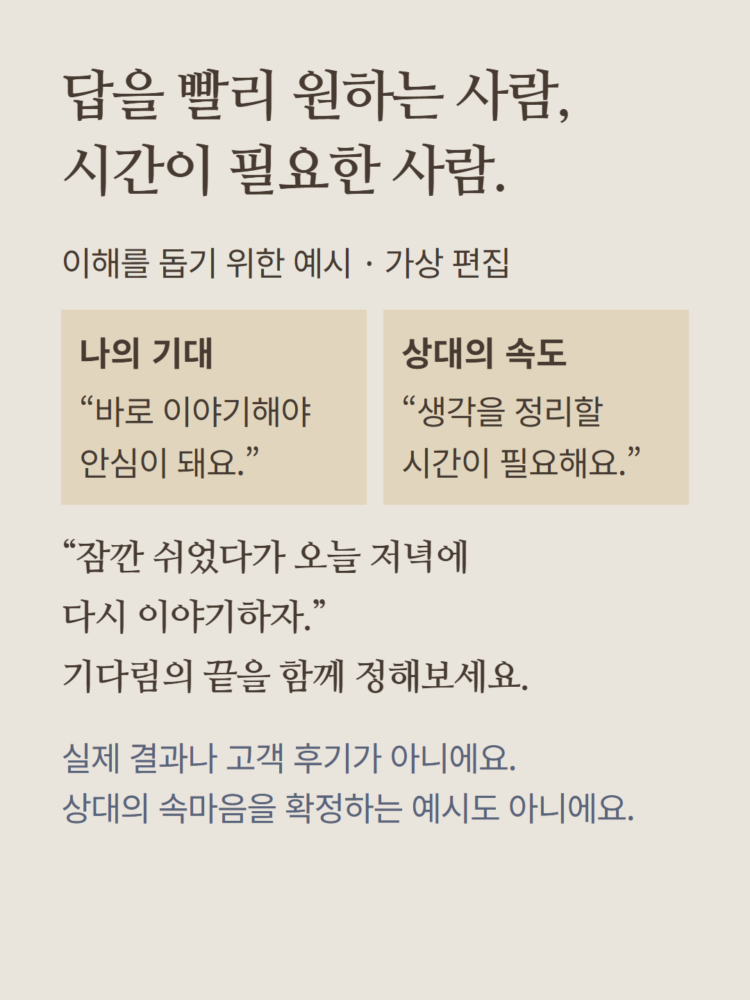
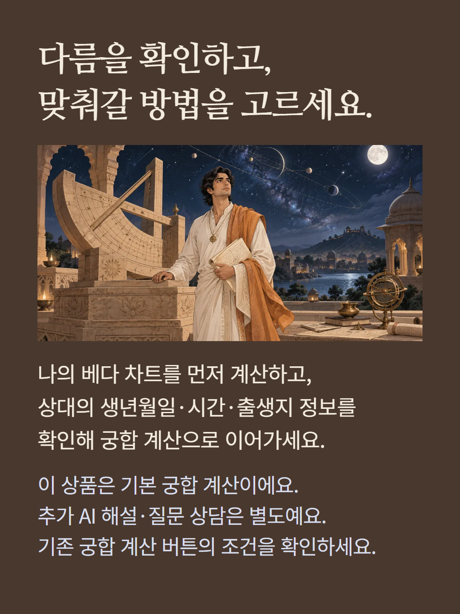

나의 베다 출생 차트를 계산한 뒤 상대의 이름·성별·생년월일·시각·출생지 위경도·시간대를 입력해 두 사람의 달 나크샤트라를 비교합니다. 서비스의 아쉬타쿠타 규칙을 적용한 36점 만점 총점과 환산 비율, 종합 해석, 바르나·바시야·타라·요니·그라하 마이트리·가나·바쿠트·나디의 여덟 항목 점수와 이유를 제공합니다. 조건에 맞는 강점·주의 항목과 마지막 조언이 표시됩니다. 전통 체계의 항목을 서비스 계산 규칙으로 단순화한 참고 해석이며 모든 베다 기법을 통합한 전문가 감정은 아닙니다. 비율은 총점의 환산값이며 결혼·재회 성공 확률이 아닙니다. 체질·건강·자녀 관련 전통 분류는 의학적 진단이나 임신 가능성의 판단 근거가 아닙니다. 계층에 관한 전통 명칭은 사람의 가치나 관계의 자격을 뜻하지 않습니다. 출생 정보의 정확도를 확인해 주세요. 결과 아래 추가 AI 상담과 질문 상담, 전문가 종합 상담은 별도 상품입니다. 예시는 이해를 돕기 위한 가상 편집이며 실제 결과나 고객 후기가 아닙니다. 현재 결제 조건을 확인해 주세요.